DialogueTutorial_4
426 × 240; 1 source occurrence(s)
sharedassets0.assets:27110 distinct previews, 120 source texture occurrences. Click a texture for its original PNG. No localized artwork has been generated.
426 × 240; 1 source occurrence(s)
sharedassets0.assets:27852 × 480; 1 source occurrence(s)
sharedassets0.assets:53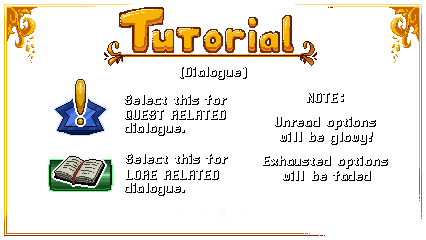
426 × 240; 1 source occurrence(s)
sharedassets0.assets:63852 × 480; 1 source occurrence(s)
sharedassets0.assets:66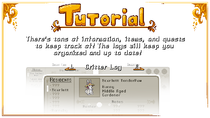
426 × 240; 1 source occurrence(s)
sharedassets0.assets:70426 × 240; 1 source occurrence(s)
sharedassets0.assets:89852 × 480; 1 source occurrence(s)
sharedassets0.assets:141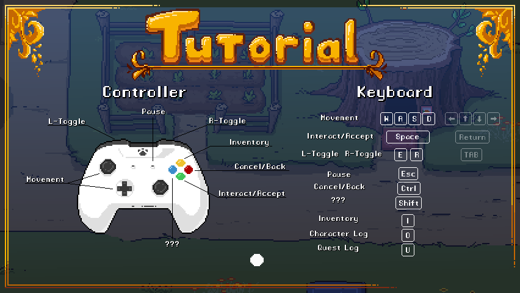
852 × 480; 1 source occurrence(s)
sharedassets0.assets:157426 × 240; 1 source occurrence(s)
sharedassets0.assets:178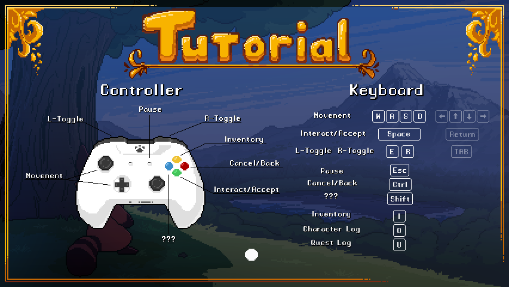
852 × 480; 1 source occurrence(s)
sharedassets0.assets:198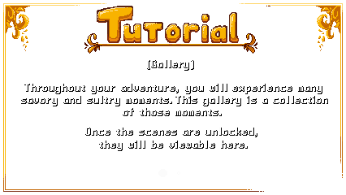
426 × 240; 1 source occurrence(s)
sharedassets0.assets:201374 × 261; 1 source occurrence(s)
sharedassets2.assets:1346 × 28; 2 source occurrence(s)
StreamingAssets/aa/StandaloneWindows64/defaultlocalgroup_assets_all_298c5a4d1d1846b1a8d2c7d5da3f319c.bundle!/CAB-7cd732d37ea0297d073a22a52ce72d28:-8345622523006170175sharedassets0.assets:6219 × 26; 2 source occurrence(s)
StreamingAssets/aa/StandaloneWindows64/defaultlocalgroup_assets_all_298c5a4d1d1846b1a8d2c7d5da3f319c.bundle!/CAB-7cd732d37ea0297d073a22a52ce72d28:-3958677587029254731sharedassets0.assets:4946 × 28; 2 source occurrence(s)
StreamingAssets/aa/StandaloneWindows64/defaultlocalgroup_assets_all_298c5a4d1d1846b1a8d2c7d5da3f319c.bundle!/CAB-7cd732d37ea0297d073a22a52ce72d28:4187711351805404041sharedassets0.assets:40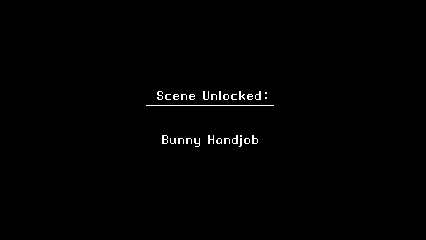
426 × 240; 2 source occurrence(s)
StreamingAssets/aa/StandaloneWindows64/defaultlocalgroup_assets_all_298c5a4d1d1846b1a8d2c7d5da3f319c.bundle!/CAB-7cd732d37ea0297d073a22a52ce72d28:7241241148057527296sharedassets0.assets:1516 × 6; 2 source occurrence(s)
resources.assets:35sharedassets2.assets:115191 × 38; 1 source occurrence(s)
sharedassets0.assets:29191 × 38; 1 source occurrence(s)
sharedassets0.assets:10087 × 20; 1 source occurrence(s)
sharedassets0.assets:114191 × 38; 1 source occurrence(s)
sharedassets0.assets:13494 × 12; 1 source occurrence(s)
sharedassets0.assets:136108 × 14; 1 source occurrence(s)
sharedassets0.assets:139191 × 38; 1 source occurrence(s)
sharedassets0.assets:140251 × 14; 1 source occurrence(s)
sharedassets0.assets:22369 × 11; 1 source occurrence(s)
sharedassets1.assets:15120 × 16; 1 source occurrence(s)
sharedassets1.assets:20120 × 16; 1 source occurrence(s)
sharedassets1.assets:21280 × 77; 1 source occurrence(s)
sharedassets1.assets:36120 × 16; 1 source occurrence(s)
sharedassets1.assets:38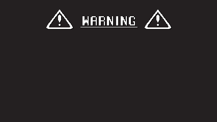
426 × 240; 1 source occurrence(s)
sharedassets1.assets:42120 × 16; 1 source occurrence(s)
sharedassets1.assets:47120 × 16; 1 source occurrence(s)
sharedassets1.assets:4856 × 11; 1 source occurrence(s)
sharedassets1.assets:49120 × 16; 1 source occurrence(s)
sharedassets1.assets:54120 × 16; 1 source occurrence(s)
sharedassets1.assets:56120 × 16; 1 source occurrence(s)
sharedassets1.assets:66120 × 16; 1 source occurrence(s)
sharedassets1.assets:73120 × 16; 1 source occurrence(s)
sharedassets1.assets:82212 × 14; 1 source occurrence(s)
sharedassets1.assets:83120 × 16; 1 source occurrence(s)
sharedassets1.assets:84157 × 20; 1 source occurrence(s)
sharedassets1.assets:8750 × 18; 1 source occurrence(s)
sharedassets1.assets:89120 × 16; 1 source occurrence(s)
sharedassets1.assets:99120 × 16; 1 source occurrence(s)
sharedassets1.assets:100120 × 16; 2 source occurrence(s)
sharedassets1.assets:105sharedassets1.assets:127120 × 16; 1 source occurrence(s)
sharedassets1.assets:116120 × 16; 1 source occurrence(s)
sharedassets1.assets:119120 × 16; 1 source occurrence(s)
sharedassets1.assets:134120 × 16; 1 source occurrence(s)
sharedassets1.assets:138120 × 16; 1 source occurrence(s)
sharedassets1.assets:143120 × 16; 1 source occurrence(s)
sharedassets1.assets:152120 × 16; 1 source occurrence(s)
sharedassets1.assets:156120 × 16; 1 source occurrence(s)
sharedassets1.assets:161120 × 16; 1 source occurrence(s)
sharedassets1.assets:164120 × 16; 1 source occurrence(s)
sharedassets1.assets:175224 × 14; 1 source occurrence(s)
sharedassets1.assets:18071 × 18; 1 source occurrence(s)
sharedassets1.assets:19393 × 12; 1 source occurrence(s)
sharedassets1.assets:197120 × 16; 1 source occurrence(s)
sharedassets1.assets:199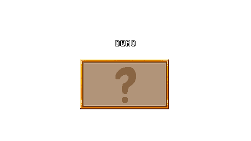
426 × 240; 1 source occurrence(s)
sharedassets1.assets:203153 × 12; 1 source occurrence(s)
sharedassets1.assets:20488 × 15; 1 source occurrence(s)
sharedassets2.assets:20120 × 32; 1 source occurrence(s)
sharedassets2.assets:34120 × 32; 1 source occurrence(s)
sharedassets2.assets:43280 × 105; 1 source occurrence(s)
sharedassets2.assets:44306 × 14; 1 source occurrence(s)
sharedassets2.assets:5082 × 19; 1 source occurrence(s)
sharedassets2.assets:5488 × 15; 1 source occurrence(s)
sharedassets2.assets:6264 × 16; 1 source occurrence(s)
sharedassets2.assets:72120 × 32; 1 source occurrence(s)
sharedassets2.assets:99195 × 39; 1 source occurrence(s)
sharedassets2.assets:102120 × 32; 1 source occurrence(s)
sharedassets2.assets:10588 × 15; 1 source occurrence(s)
sharedassets2.assets:108260 × 240; 1 source occurrence(s)
sharedassets2.assets:10984 × 18; 1 source occurrence(s)
sharedassets2.assets:117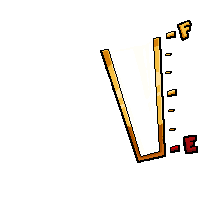
198 × 198; 1 source occurrence(s)
sharedassets4.assets:49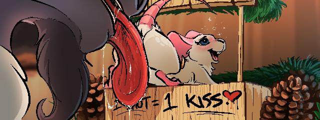
640 × 240; 1 source occurrence(s)
StreamingAssets/aa/StandaloneWindows64/defaultlocalgroup_assets_all_298c5a4d1d1846b1a8d2c7d5da3f319c.bundle!/CAB-7cd732d37ea0297d073a22a52ce72d28:-8202533807306672917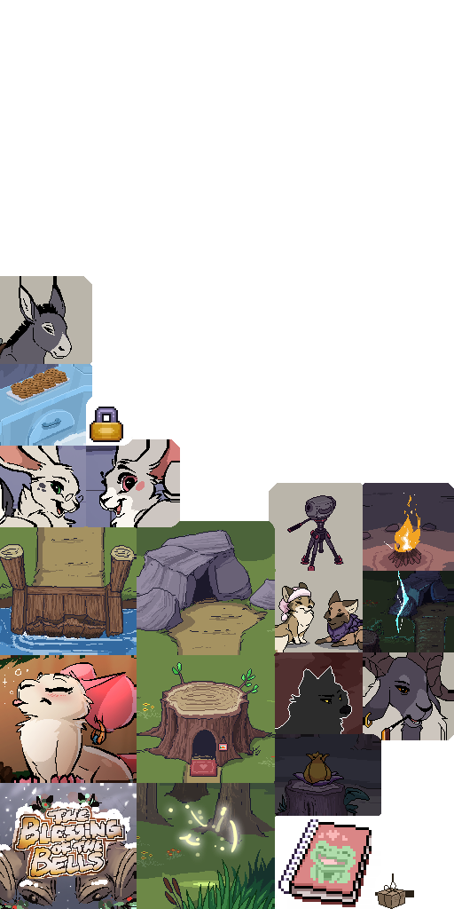
512 × 1024; 1 source occurrence(s)
StreamingAssets/aa/StandaloneWindows64/defaultlocalgroup_assets_all_298c5a4d1d1846b1a8d2c7d5da3f319c.bundle!/CAB-7cd732d37ea0297d073a22a52ce72d28:-7516614952582679988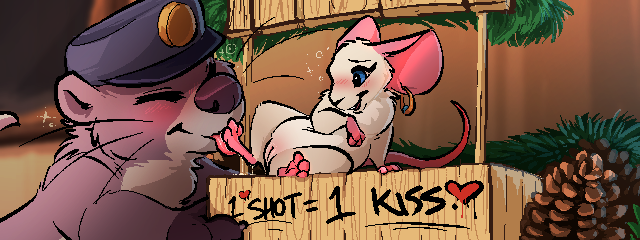
640 × 240; 1 source occurrence(s)
StreamingAssets/aa/StandaloneWindows64/defaultlocalgroup_assets_all_298c5a4d1d1846b1a8d2c7d5da3f319c.bundle!/CAB-7cd732d37ea0297d073a22a52ce72d28:-6956676787262913553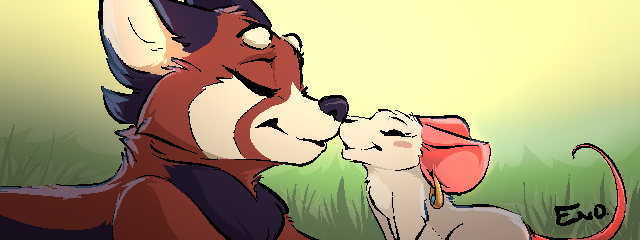
640 × 240; 1 source occurrence(s)
StreamingAssets/aa/StandaloneWindows64/defaultlocalgroup_assets_all_298c5a4d1d1846b1a8d2c7d5da3f319c.bundle!/CAB-7cd732d37ea0297d073a22a52ce72d28:-5700896845411987584640 × 240; 1 source occurrence(s)
StreamingAssets/aa/StandaloneWindows64/defaultlocalgroup_assets_all_298c5a4d1d1846b1a8d2c7d5da3f319c.bundle!/CAB-7cd732d37ea0297d073a22a52ce72d28:-5351113954096111273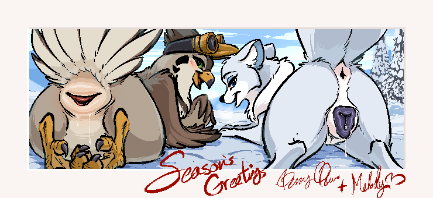
740 × 340; 1 source occurrence(s)
StreamingAssets/aa/StandaloneWindows64/defaultlocalgroup_assets_all_298c5a4d1d1846b1a8d2c7d5da3f319c.bundle!/CAB-7cd732d37ea0297d073a22a52ce72d28:-4999637169053904271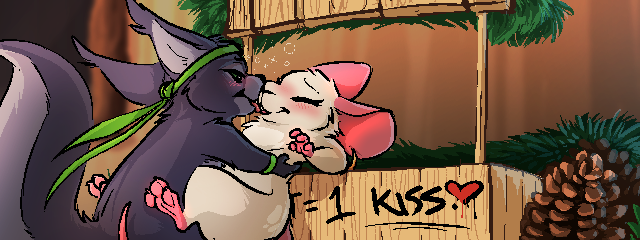
640 × 240; 1 source occurrence(s)
StreamingAssets/aa/StandaloneWindows64/defaultlocalgroup_assets_all_298c5a4d1d1846b1a8d2c7d5da3f319c.bundle!/CAB-7cd732d37ea0297d073a22a52ce72d28:-3206821214191549963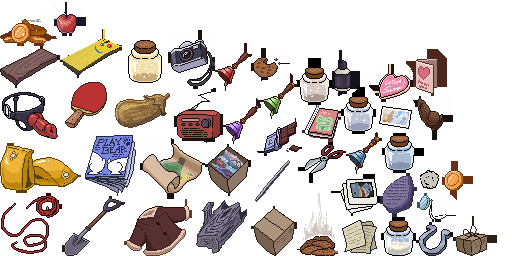
512 × 256; 2 source occurrence(s)
StreamingAssets/aa/StandaloneWindows64/defaultlocalgroup_assets_all_298c5a4d1d1846b1a8d2c7d5da3f319c.bundle!/CAB-7cd732d37ea0297d073a22a52ce72d28:5933655946008629389sharedassets4.assets:17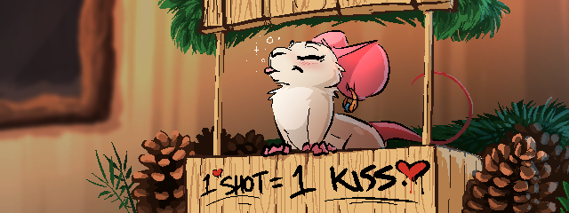
640 × 240; 1 source occurrence(s)
StreamingAssets/aa/StandaloneWindows64/defaultlocalgroup_assets_all_298c5a4d1d1846b1a8d2c7d5da3f319c.bundle!/CAB-7cd732d37ea0297d073a22a52ce72d28:6636166956124893925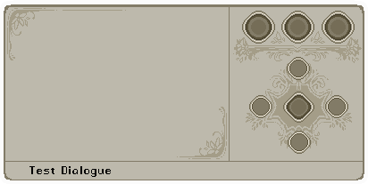
412 × 207; 1 source occurrence(s)
sharedassets2.assets:12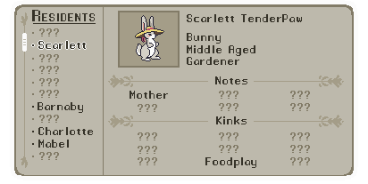
412 × 207; 1 source occurrence(s)
sharedassets2.assets:36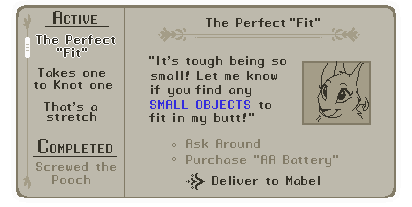
412 × 207; 1 source occurrence(s)
sharedassets2.assets:38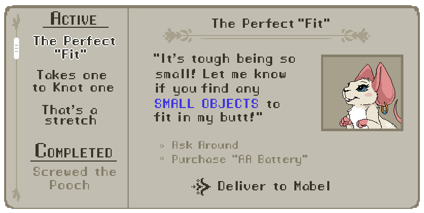
824 × 414; 1 source occurrence(s)
sharedassets2.assets:57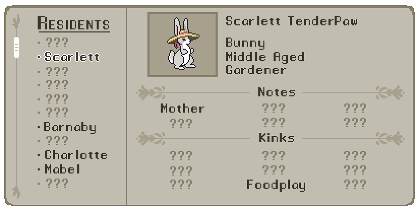
824 × 414; 1 source occurrence(s)
sharedassets2.assets:100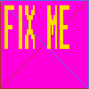
100 × 100; 4 source occurrence(s)
StreamingAssets/aa/StandaloneWindows64/defaultlocalgroup_assets_all_298c5a4d1d1846b1a8d2c7d5da3f319c.bundle!/CAB-7cd732d37ea0297d073a22a52ce72d28:-8547572636448055797StreamingAssets/aa/StandaloneWindows64/defaultlocalgroup_assets_all_298c5a4d1d1846b1a8d2c7d5da3f319c.bundle!/CAB-7cd732d37ea0297d073a22a52ce72d28:2092921801106520592sharedassets17.assets:16sharedassets4.assets:34512 × 129; 1 source occurrence(s)
resources.assets:17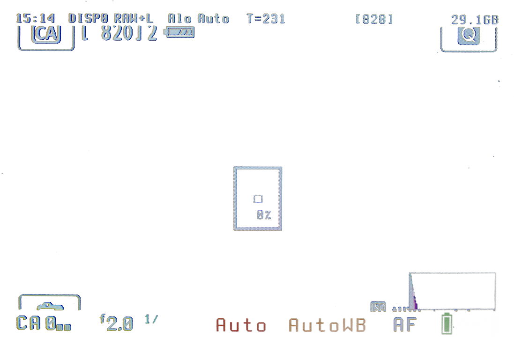
1097 × 722; 1 source occurrence(s)
resources.assets:2164 × 64; 1 source occurrence(s)
resources.assets:24512 × 129; 1 source occurrence(s)
resources.assets:3264 × 64; 1 source occurrence(s)
resources.assets:38160 × 160; 1 source occurrence(s)
resources.assets:40512 × 129; 1 source occurrence(s)
resources.assets:42512 × 129; 1 source occurrence(s)
resources.assets:48128 × 58; 1 source occurrence(s)
Resources/unity default resources:10400267 × 20; 1 source occurrence(s)
Resources/unity default resources:104022048 × 1024; 1 source occurrence(s)
Resources/unity default resources:10403512 × 94; 1 source occurrence(s)
Resources/unity default resources:1040676 × 14; 1 source occurrence(s)
Resources/unity default resources:10407127 × 17; 1 source occurrence(s)
Resources/unity default resources:10408148 × 17; 1 source occurrence(s)
Resources/unity default resources:10409115 × 17; 1 source occurrence(s)
Resources/unity default resources:1041087 × 13; 1 source occurrence(s)
Resources/unity default resources:1041366 × 17; 1 source occurrence(s)
Resources/unity default resources:10414